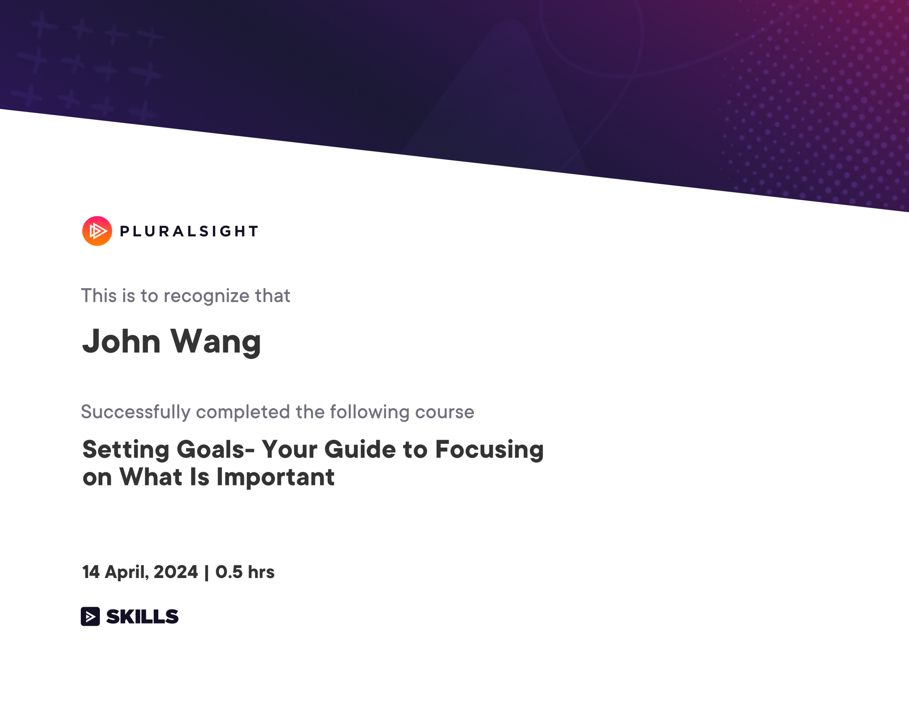
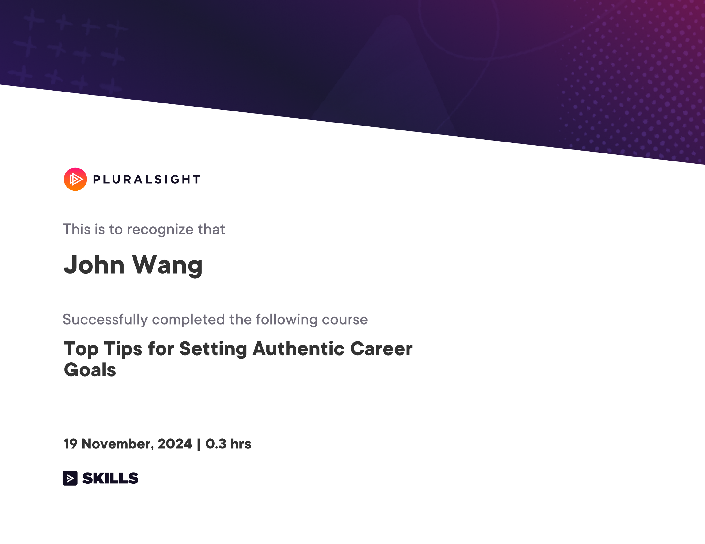
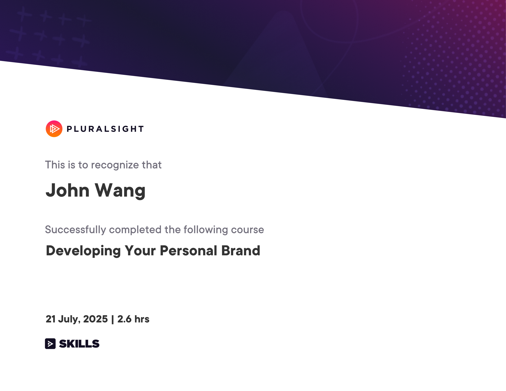
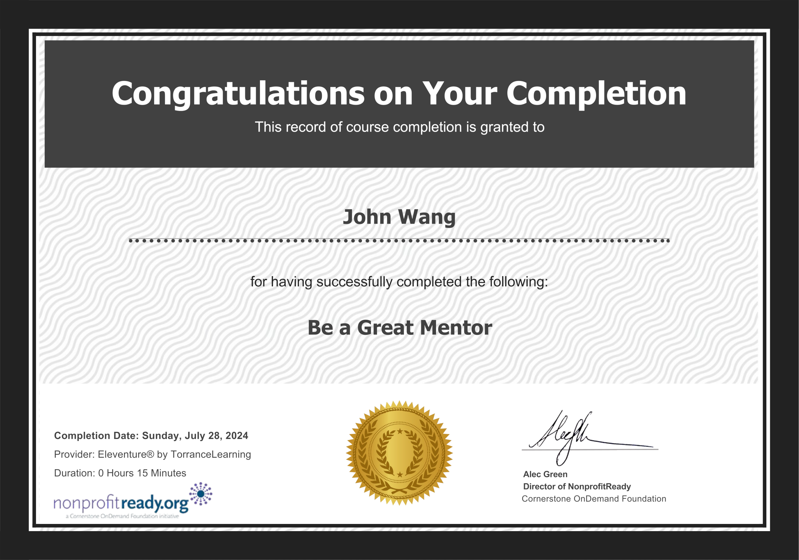
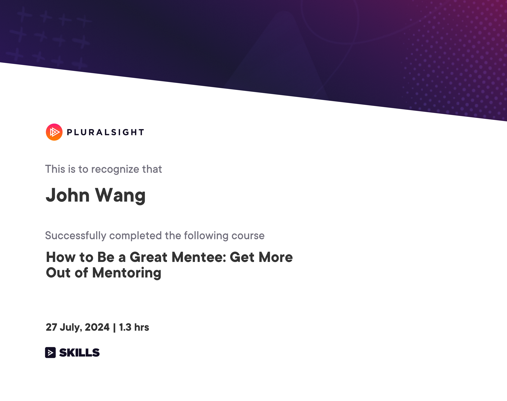
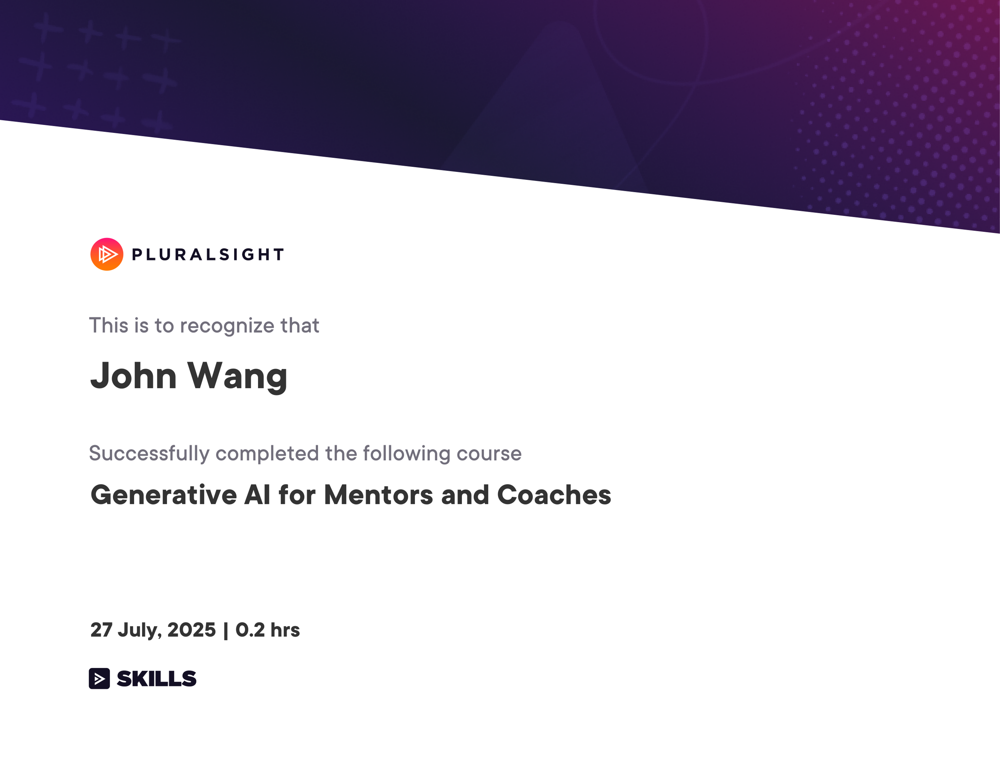
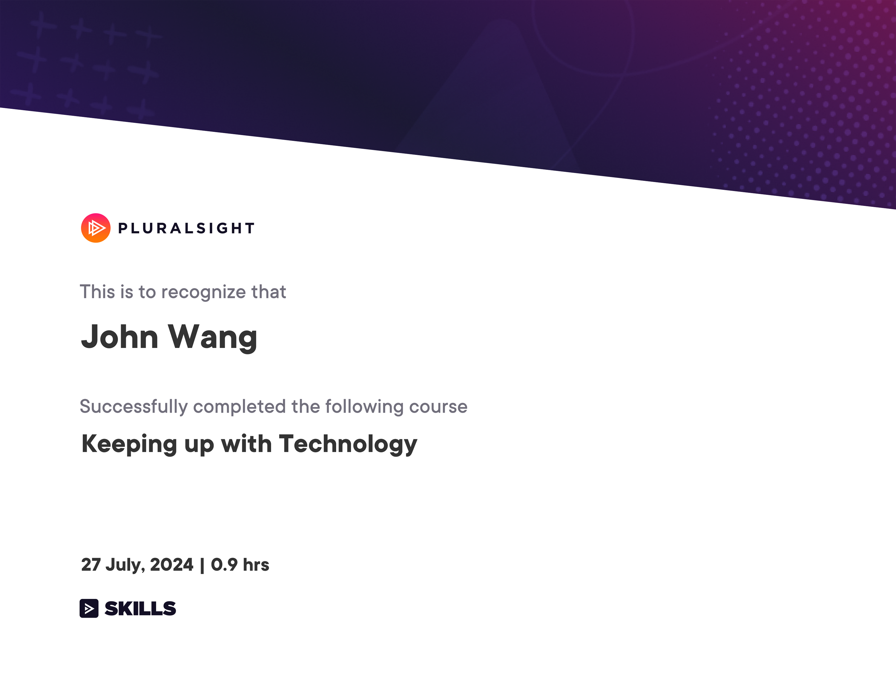
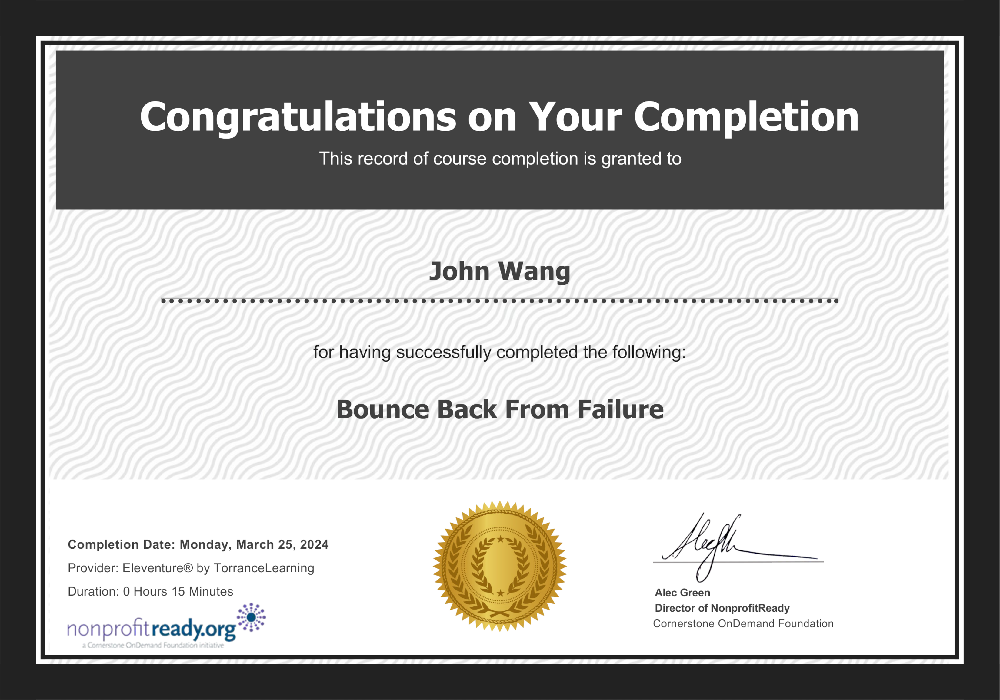

John's Personal Development Certificates
Goals (2)
Setting Goals - Your Guide to Focusing on What Is Important from Pluralsight by Tommy van Schaik

Top Tips for Setting Authentic Career Goals from Pluralsight by Dr. Sweta Chawla

Personal Branding (1)
Developing Your Personal Brand from Pluralsight by Jason Alba

Mentorship (3)
Be a Great Mentor from Eleventure

How to Be a Great Mentee: Get More Out of Mentoring from Pluralsight by Jason Alba

Generative AI for Mentors and Coaches from Pluralsight by David Harris

Learning (2)
Start Your Lifelong Learning from Accenture

Keeping up with Technology from Pluralsight by Dan Appleman

Resiliency (1)
Bounce Back From Failure from Eleventure
